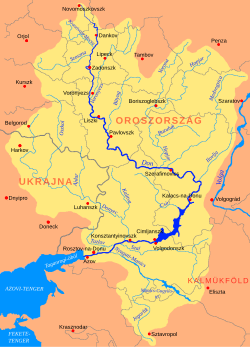

Don
A Don Oroszország egyik jelentős folyója,
amely a Közép-orosz-hátság területén ered.
A folyó körülbelül 1950 kilométer hosszú,
és az Azovi-tenger Taganrogi-öblébe ömlik.
A Don fontos szerepet játszik Oroszország
természetében, gazdaságában és történelmében.
A folyó vízgyűjtő területe nagy kiterjedésű,
és több fontos település található a közelében.
A Don-kanyar a magyar történelemben is jelentős,
mivel a második világháború idején a magyar
2. hadsereg súlyos veszteségeket szenvedett
ezen a területen.
A Don fontosabb adatai
| Ország |
Oroszország |
| Hossz |
1950 km |
| Forrásszint |
180 m |
| Vízhozam |
935 m³/s |
| Vízgyűjtő terület |
422 000 km² |
| Forrás |
Közép-orosz-hátság, Tulai terület |
| Torkolat |
Azovi-tenger, Taganrogi-öböl |
Érdekességek a Don folyóról
A Don folyó Oroszország délnyugati részén
található, és fontos szerepet tölt be a
környék közlekedésében és gazdaságában.
A folyó egyik legismertebb városa Rosztov-na-Donu,
amely a Don partján helyezkedik el.
A Don környékén jelentős mezőgazdasági területek
találhatók, a folyó pedig sokféle halnak és
más vízi élőlénynek biztosít élőhelyet.
